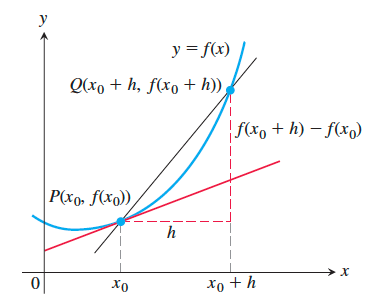
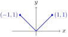
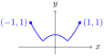
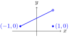
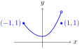
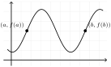
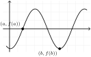
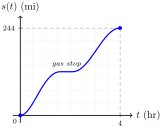

Print preview
Handout Days 22 & 23a: Section 4.2: Rolle’s Theorem and Mean Value Theorem
Last Time: We studied curve sketching by extracting key features of graphs from first and second derivatives, along with the idea of symmetry.
Today: We explore our final applications of derivatives: Rolle’s Theorem and the Mean Value Theorem.
Secant Lines, Tangent Lines, and Rates of Change.
We have worked with secant lines and tangent lines multiple times in different contexts. Recall how they connect to rates of change by filling in the blanks below:
-
The of the secant line is the rate of change.
-
The of the tangent line is the rate of change.
-
The of the average rate of change is the instantaneous rate of change.

Today we want to see how secant and tangent lines relate to each other on the graph of a continuous and differentiable function. Let’s start with a simple case and suppose \(f(x)\) is a function defined on \([a, b]\) satisfying the following:
Condition 1: \(f\) is on the closed interval \([a, b]\text{,}\)
Condition 2: \(f\) is on the open interval \((a, b)\text{,}\) and
Condition 3: \(f(a) =\) .
Here’s a sketch of our coordinate plane, with a function that satisfies all these three properties.
![Graph of a continuous and differentiable curve on [a, b] with f(a) = f(b) and a horizontal tangent line at an interior point c in (a, b).](external/pictures/Rolle's%20Theorem.png)
Questions:
-
Is the secant line through the endpoints \(\bigl(a, f(a)\bigr)\) and \(\bigl(b, f(b)\bigr)\) horizontal?
-
Is it possible to draw a horizontal tangent line at some number \(c\) in \((a, b)\text{?}\)
-
Conclusion: Given the three conditions, there is one number \(c\) in \((a, b)\) where the slope of the tangent line is .
This visual observation holds for the graph of any continuous and differentiable function whose endpoints are at the same height. We formalize this guarantee below:
Rolle’s Theorem.
Rolle’s Theorem: Suppose \(f(x)\) is
Condition 1: a function on \([a, b]\text{,}\)
Condition 2: over \((a, b)\text{,}\) and
Condition 3: \(f(a) =\) .
Then there is one value \(c\) in \((a, b)\) at which \(f'(c) =\) .
Geometrically, under these three conditions, there must be at least one point on the graph between \(x = a\) and \(x = b\) where is equal to .
Application: Proving a Unique Root (Problem 1).
One classic use of Rolle’s Theorem is proving that an equation has exactly one solution on an interval. To prove this, we split the job between two theorems:
Step 1: Existence (at least one): Use the Intermediate Value Theorem to show the equation has a solution.
Step 2: Uniqueness (at most one): Use Rolle’s Theorem to show the equation cannot have two solutions.
Problem 1: Show that the equation \(x^3 + x - 2 = 0\) has exactly one solution on \([0, 2]\text{.}\)
Step 1: Existence (at least one solution): Let \(f(x) = x^3 + x - 2\text{.}\) Explain why the Intermediate Value Theorem applies to \(f(x)\) on \([0, 2]\text{,}\) and use it to show that \(f(x) = 0\) has at least one solution in this interval. Fill in the blanks.
Since \(f(x)\) is a , it is continuous everywhere, so the Intermediate Value Theorem applies on \([0, 2]\text{.}\) Also, \(f(0) =\) \(\lt\) \(\lt f(2) =\) . Therefore, the theorem guarantees that \(f(x) =\) has on \([0, 2]\text{.}\)
Step 2: Uniqueness (at most one solution): Suppose, by contradiction, that \(f(x) = 0\) has two distinct solutions \(a\) and \(b\) in \([0, 2]\text{,}\) with \(a \lt b\text{.}\)
-
Since \(a\) and \(b\) are solutions of \(f(x) = 0\text{,}\) what are the values of \(f(a)\) and \(f(b)\text{?}\)
-
Since \(f(x)\) is a , it is continuous on \([a, b]\) and differentiable on \((a, b)\text{.}\) Combining this with part (i), what does Rolle’s Theorem guarantee about \(f'(x)\text{?}\)
-
Finding the contradiction: Compute \(f'(x)\text{.}\) Based on your formula for \(f'(x)\text{,}\) is the guarantee from part (ii) actually possible? Explain why or why not.
-
Conclusion: Since part (iii) gave us a , our initial assumption in part (ii) must be —meaning \(f(x) = 0\) cannot have solutions. Combining this with Step 1, which showed \(f(x) = 0\) has at least one solution on \([0, 2]\text{,}\) we conclude that the solution is (there is one solution on \([0, 2]\)).
Quick Check: What Happens When a Hypothesis Fails?
Rolle’s Theorem only guarantees a number \(c\) in \((a, b)\) where \(f'(c) = 0\) when all three conditions hold. If even one condition fails, that guarantee disappears—meaning there might be no such \(c\text{,}\) or one might still exist anyway!

-
Condition fails: Not differentiable on \((-1, 1)\text{.}\)
-
Does \(f'(c) = 0\) hold anywhere in \((-1, 1)\text{?}\)

-
Condition fails: Not differentiable on \((-1, 1)\text{.}\)
-
Does \(f'(c) = 0\) hold anywhere in \((-1, 1)\text{?}\)

-
Condition fails: Not continuous on \([-1, 1]\text{.}\)
-
Does \(f'(c) = 0\) hold anywhere in \((-1, 1)\text{?}\)

-
Condition fails: Not continuous on \([-1, 1]\text{.}\)
-
Does \(f'(c) = 0\) hold anywhere in \((-1, 1)\text{?}\)
From Rolle’s Theorem to the Mean Value Theorem.
Notice that in Rolle’s theorem, the conditions that \(f\) is continuous and differentiable are important in forcing the function to behave the way we want it to.
-
But the only reason we needed \(f(a) = f(b)\) was to get a for our tangent lines to be parallel to.

-
In fact, we can draw a straight line connecting any two points, and the line does need to be horizontal; that is, its slope does need to be zero. If we drop the third condition, \(f(a) = f(b)\text{,}\) we obtain the Mean Value Theorem.
Mean Value Theorem (MVT): Suppose \(f(x)\) is
Condition 1: a function on \([a, b]\)
Condition 2: and is over \((a, b)\text{.}\)
Then there is one value \(c\) in \((a, b)\) at which
\begin{equation*}
f'(c) = \underline{\hspace{1in}}
\end{equation*}

Geometrically, under these two conditions, there must be at least one number \(c\) inside the interval where the of the is equal to the of the passing through the endpoints.
Application: How Can We Use the MVT in Real Life? (Problem 2).
The following is a simple application of the MVT, but it’s powerful—it is the exact math behind automated toll-road and highway speeding tickets!
A trucker drives west a distance of \(244\) miles, stopping only once to get gas. She begins the trip parked at a truck stop and ends the trip parked at another truck stop. The trip takes her \(4\) hours. Let \(s(t)\) be the truck’s position (in miles west of the starting truck stop) after \(t\) hours, as shown in the graph.

-
Compute the trucker’s average velocity over the \(4\)-hour trip (include units):
-
Explain why the Mean Value Theorem applies to \(s(t)\) on \([0, 4]\text{,}\) and state what it guarantees in the context of this problem:
-
Did she ever exceed the \(60\text{ mph}\) speed limit? Explain your reasoning clearly.
Problem 3.
Let’s finish with a few algebraic problems and some mathematical consequences of our theorem.
Determine whether each of the following functions meets the conditions of the Mean Value Theorem (MVT) on the given interval. If it does, find the value(s) \(c\) guaranteed by the theorem.
-
\(\displaystyle f(x) = \frac{x}{x+1}\) on \([0, 3]\text{.}\)
-
Is \(f(x)\) continuous on \([0, 3]\text{?}\) Why or why not? Hint: What is the domain of \(\displaystyle \frac{x}{x+1}\text{?}\)
-
Is \(f(x)\) differentiable on \((0, 3)\text{?}\) Why or why not? Hint: Is \(f'(x)\) defined on \((0, 3)\text{?}\)
-
If YES for both parts i) and ii), fill in the following blanks: By the MVT, there is one value \(c\) in \((0, 3)\) at which \(f'(c) =\) .
-
Find all such values of \(c\) in \((0, 3)\text{:}\)
-
-
(Exercise) \(\displaystyle g(x) = \sqrt[3]{x-1}\) on \([0, 9]\text{.}\) Hint: Check BOTH conditions of the MVT! Is \(g(x)\) differentiable on \((0, 9)\text{?}\)
Mathematical Consequences of the Mean Value Theorem.
Here are a couple of other nice mathematical consequences of the MVT. (Proofs are for your information, not for testing.)
Corollary 1: If \(f'(x) = 0\) at every point \(x\) in \((a, b)\text{,}\) then \(f(x) = C\) for all \(x\) in \((a, b)\text{,}\) where \(C\) is a constant.
Quick Proof: Pick any two points \(x_1 \lt x_2\) in \((a, b)\text{.}\) By the MVT, there is some \(c\) in \((x_1, x_2)\) such that
\begin{equation*}
\frac{f(x_2)-f(x_1)}{x_2-x_1} = f'(c) = \underline{\hspace{0.6in}} \implies f(x_2) - f(x_1) = \underline{\hspace{0.6in}} \implies f(x_1) \,\underline{\hspace{0.6in}}\, f(x_2).
\end{equation*}
Thus \(f\) takes the value everywhere on \((a, b)\text{,}\) so \(f\) is a function!
Corollary 2: If \(f'(x) = g'(x)\) at every point \(x\) in \((a, b)\text{,}\) then \(f(x) = g(x) + C\) for all \(x\) in \((a, b)\text{,}\) where \(C\) is a constant.
Quick Proof: Let \(h(x) = f(x) - g(x)\text{.}\) Then \(h'(x) = f'(x) - g'(x) =\) . By Corollary 1, \(h(x) =\) , so \(f(x) = g(x) +\) .
Notes:
-
Corollary 2 tells us that if two functions have the derivative, they differ by .
-
In other words, given a derivative function \(f'(x)\text{,}\) we can find all functions whose derivative is \(f'(x)\) (by finding just one and adding \(+C\)). This leads directly to antiderivatives (which will be the final topic of this course and studied in more depth in MATH 1552).
Applications of Corollary 2.
-
Antiderivatives — Finding Velocity and Position from Acceleration: Suppose a ball is thrown upward with acceleration \(a(t) = -32\text{ ft/s}^2\text{,}\) initial velocity \(v(0) = 48\text{ ft/s}\text{,}\) and initial height \(s(0) = 6\text{ ft}\text{.}\) Find \(v(t)\) using the steps below, then find \(s(t)\) as an exercise.Step 1: Recall that \(a(t) = v'(t)\text{.}\) Find a function in terms of \(t\) whose derivative is \(-32\text{:}\)Step 2: By Corollary 2, \(v(t) =\) \(+ C\text{.}\)Step 3: Now use the initial velocity \(v(0) = 48\) to find \(C\) and conclude \(v(t)\text{:}\)(Exercise) Find \(s(t)\text{:}\)
-
Deriving the Properties of Logarithms (for \(b \gt 0\text{,}\) \(x \gt 0\text{,}\) and any real number \(r\)):
-
\(\displaystyle \ln(bx) = \ln(b) + \ln(x)\) Hint: Consider \(f(x) = \ln(bx)\) and \(g(x) = \ln(x)\text{,}\) show that \(f(x) = g(x) + C\text{,}\) then plug in \(x = 1\) to find \(C\text{.}\)
-
(Exercise) \(\displaystyle \ln\left(\frac{b}{x}\right) = \ln(b) - \ln(x)\) Hint: Consider \(\displaystyle f(x) = \ln\left(\frac{b}{x}\right)\) and \(g(x) = -\ln(x)\text{.}\)
-
(Exercise) \(\displaystyle \ln(x^r) = r\,\ln(x)\) Hint: Consider \(f(x) = \ln(x^r)\) and \(g(x) = r\ln(x)\text{.}\)
-
![Runestone Academy logo]()
![MathJax logo]()